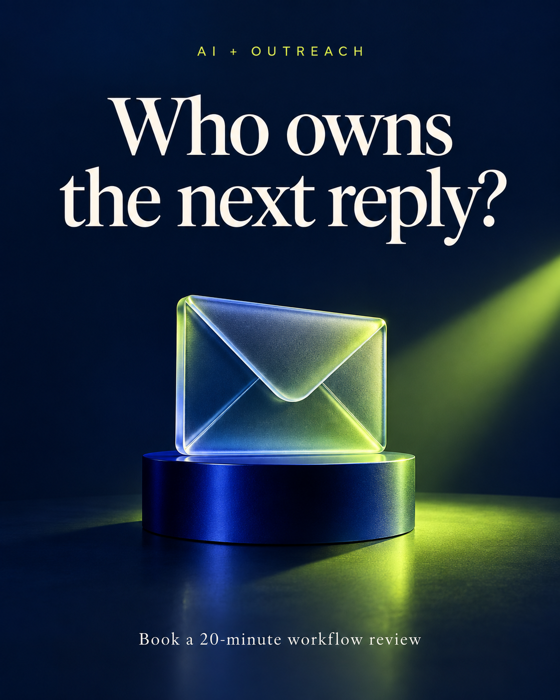
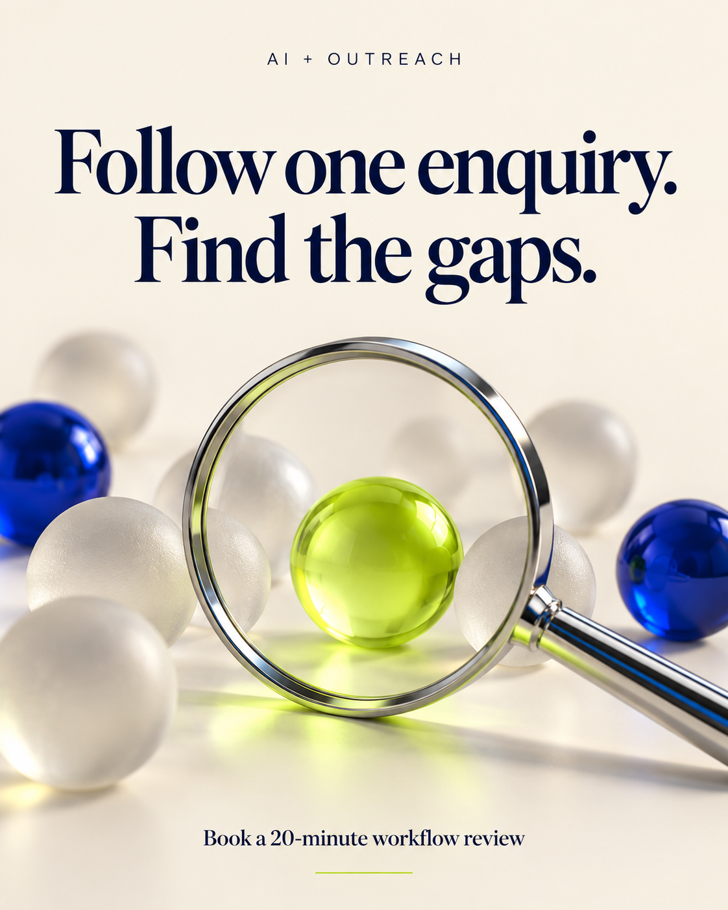
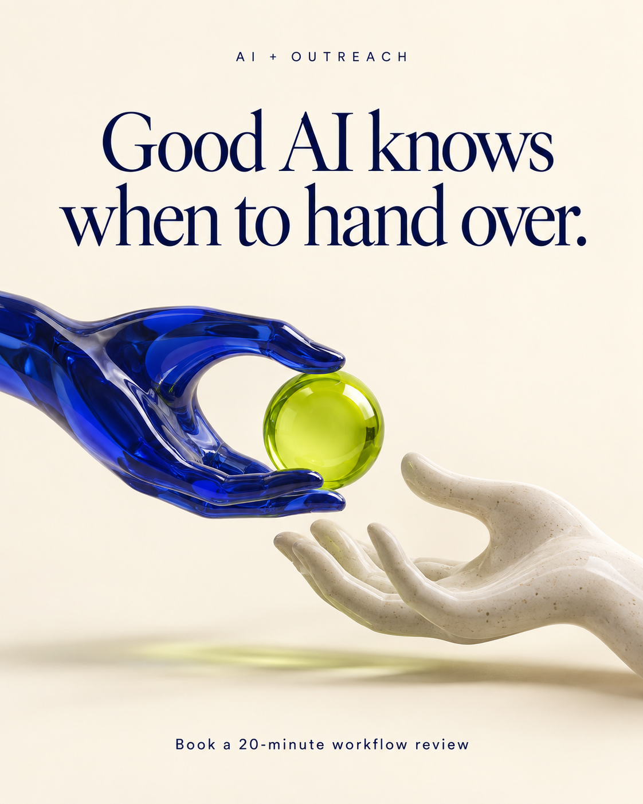
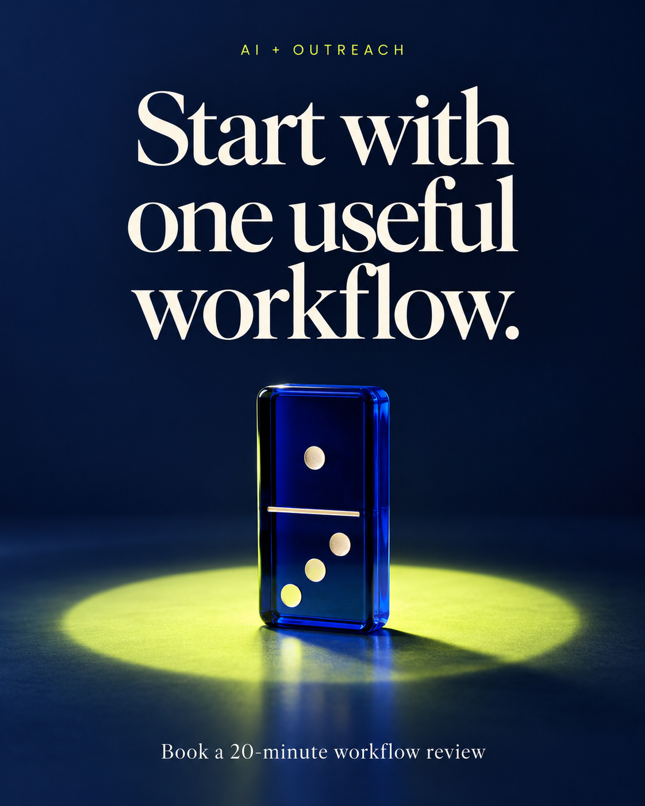
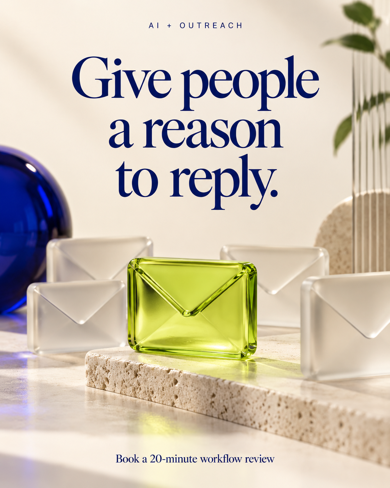
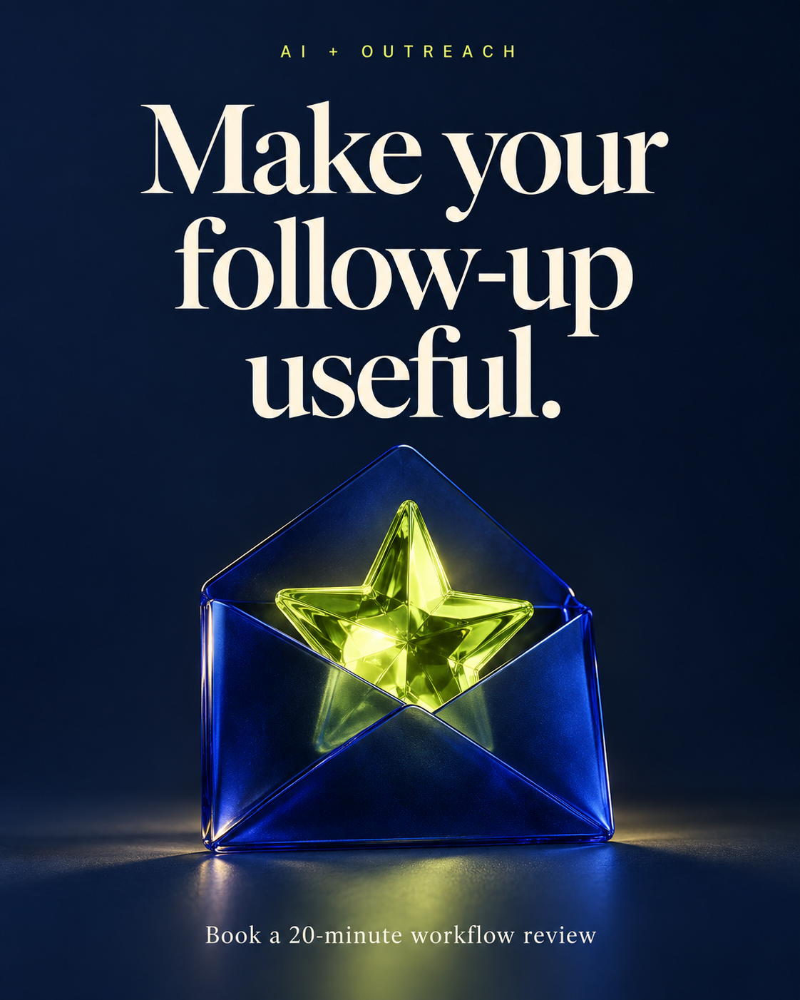
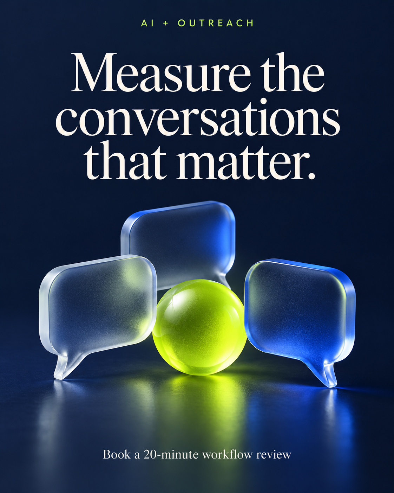

Month one, finished
The campaign kit
Everything below was built before the pitch was written. Twelve finished graphics, a twenty-eight day calendar, eight email sequences and the full operating playbook — none of it sent, scheduled or published. It waits for approval and branding.
The twelve graphics
Raster artwork at 1122×1402, built for Instagram and LinkedIn. The navy, lime and ivory in these files is where the whole visual identity of this project came from.

Your next client is waiting for a replyWeek 1 — enquiries and follow-up gaps 
Who owns the next reply?Week 1 — naming an owner 
Follow one enquiry. Find the gapsWeek 1 — tracing a single lead 
Give your AI a useful next stepWeek 2 — AI that does something 
Good AI knows when to hand overWeek 2 — the human handoff 
Start with one useful workflowWeek 2 — starting small 
Reach the right peopleWeek 3 — relevant reach 
Give people a reason to replyWeek 3 — relevance 
Make your follow-up usefulWeek 3 — useful follow-up 
Make it easy to take the next stepWeek 4 — easy booking 
Measure the conversations that matterWeek 4 — measurement Bring one workflow. Leave with a next stepWeek 4 — the review offer
What else is in the kit
| Document | What it holds | Read |
|---|---|---|
| Operating playbook | Positioning, platform configuration, six workflow specs, the AI assistant brief and its ten pre-launch test cases, measurement plan | Open |
| Email sequences | Four existing-contact emails, four cold-prospect emails, plus reply, booking, reminder, no-show and recap scripts | Open |
| Social captions | Twelve posts with separate Instagram and LinkedIn copy, and alt text for each | Open |
| 28-day calendar | Daily actions, owners and time budgets across the four weeks | Open |
Raw files
The original text, CSV and scheduling files, exactly as produced: